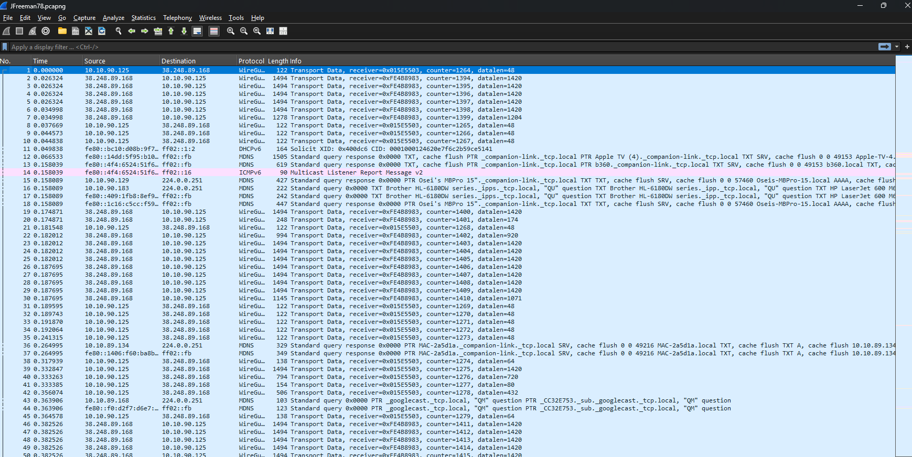

CTFs & Blue Team Challenges
Completed OverTheWire Bandit levels and participated in Blue Team competitions. Skilled in identifying vulnerabilities, analyzing logs, and defending systems under pressure. These exercises sharpened my ability to think critically under time constraints and respond to real-world threats.
Network Analysis
Proficient with Wireshark for packet inspection, protocol analysis, and threat detection. I’ve dissected traffic patterns, identified anomalies, and traced malicious activity across networks. This hands-on experience has deepened my understanding of TCP/IP and cybersecurity fundamentals.
Slack Bots
Built FantasyDraftBot for draft analysis and waiver recommendations. Integrated with OpenAI and Slack APIs to deliver real-time insights, team reviews, and automated alerts. This project showcases my ability to combine AI with practical automation in collaborative environments.
n8n Flows
Automated workflows using n8n for data orchestration, notifications, and API chaining. Designed modular flows for scalable automation across platforms, including Slack, Google Sheets, and custom endpoints. These flows reduce manual overhead and improve operational efficiency.